Adding sheet metal features
After you have constructed the base feature, you can use the sheet metal commands to complete the part by adding features such as tabs, flanges, bends, jogs, etches, and so forth.
Feature properties
You can also change properties for an individual feature. For example, you may want to use one bend radius value for the entire part, except for one flange, which needs a larger bend radius. Click Flange Options on the command bar to change the properties for an individual feature.
You cannot change the material thickness of an individual feature.
Adding sheet metal features to parts
In the ordered environment, you can add sheet metal features such as flanges (A), contour flanges (B), or dimples (C) on the uniform thickness portion of a regular part.
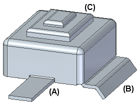
Adding sheet metal features to parts workflow
-
In the ordered part environment, create a part with a uniform thickness.
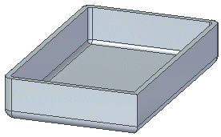
-
Switch to the sheet metal environment.
-
Add the appropriate sheet metal features to the model.
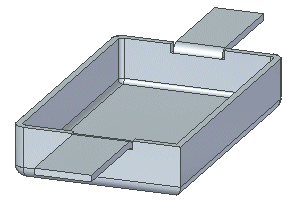
Parts with multiple thicknesses
You cannot add sheet metal features to a part for if the selected part face has multiple partner faces of multiple thicknesses. For example, sketches (A) and (B) are on a portion of the part that has a uniform thickness while sketch (C) is on a portion of the part that spans multiple thicknesses.
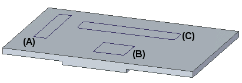
Because sketches (A) and (B) are on a portion of the part with a uniform thickness, you can select the sketches
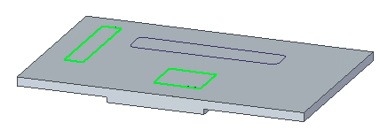
To create a sheet metal feature.
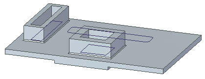
Because sketch (C) spans portions of the part that contains multiple thicknesses, you cannot select it to create a sheet metal feature.
Bends follow the same multiple thickness rules as other sheet metal features when
Adding bends to parts
Like other sheet metal features, you can add bends to regular parts. Bends follow the same rules as other features regarding part thickness. For example, sketch (A) is on a portion of the part that has uniform thickness
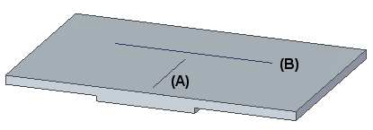
Because there is uniform thickness you can use the sketch to create a bend.
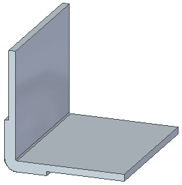
Because sketch (B) spans a portion of the part that contains multiple thicknesses, you cannot use it to create a bend.
The bend thickness is derived from the thickness of the faces on which the bend is being applied.
After placing the bend you can use the Flat Pattern command to flatten the design model.
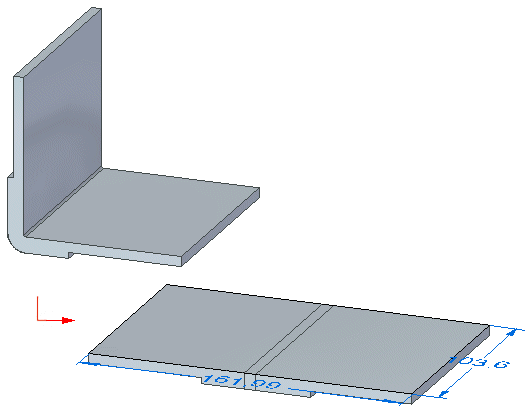
You can also use the Unbend command to straighten the bend as you would with a regular sheet metal part.
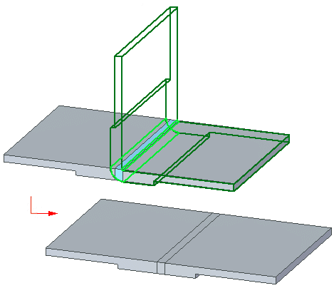
Likewise, you can use the Rebend command to reapply the bend to the model.
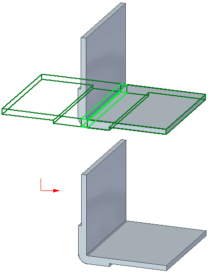